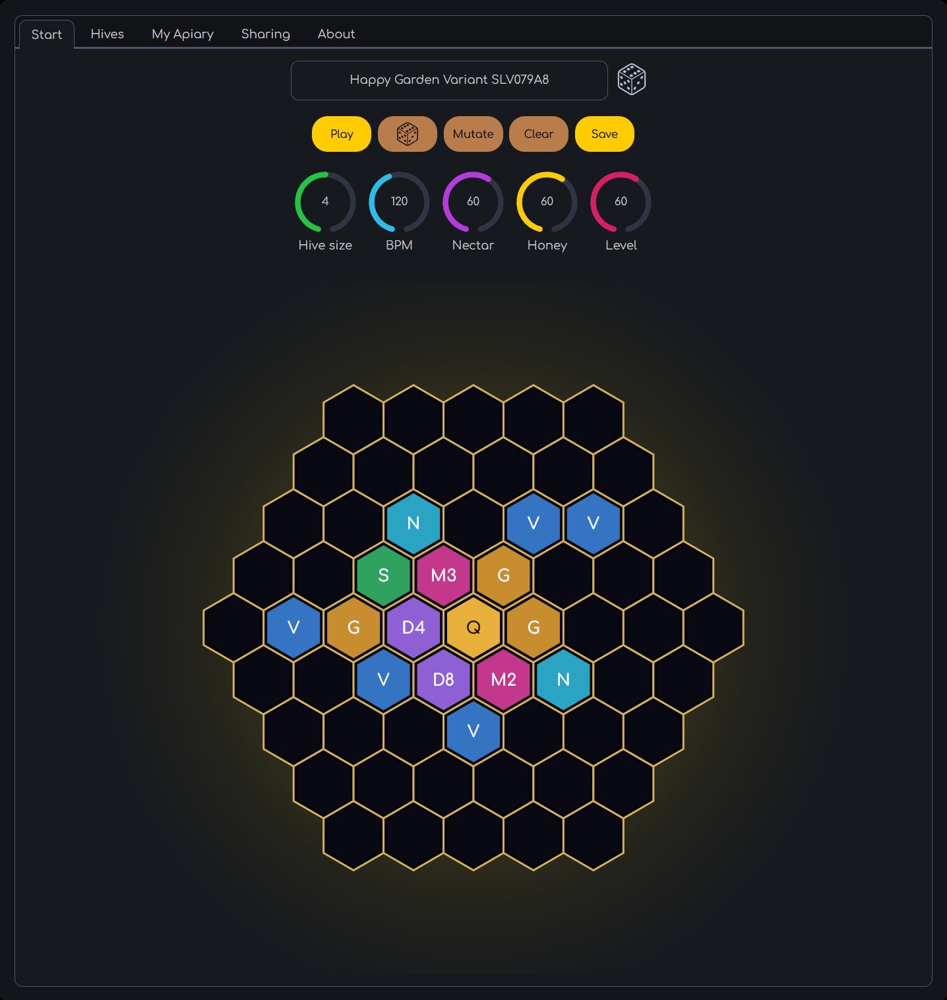
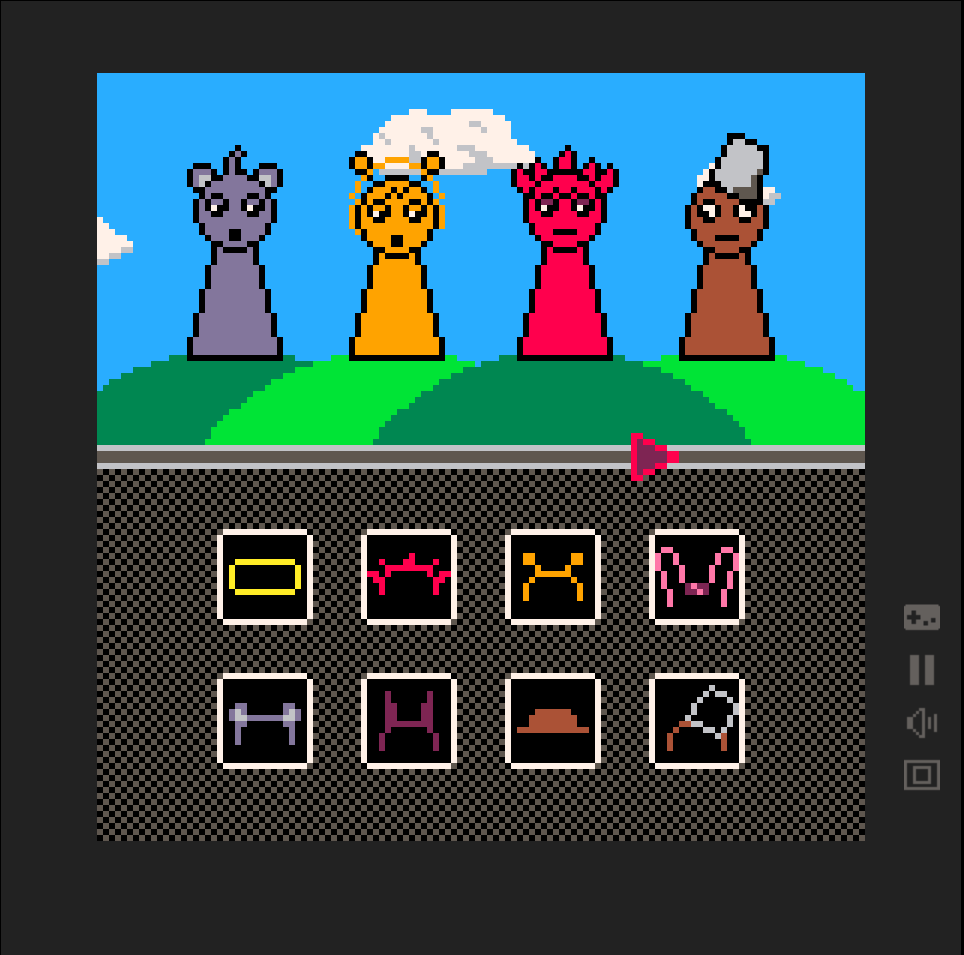
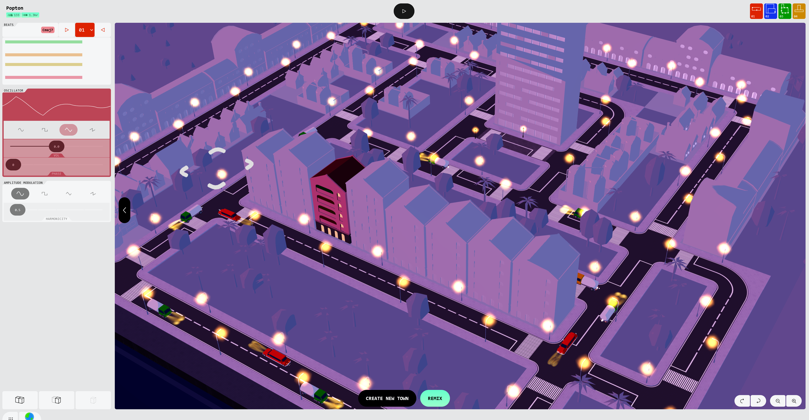
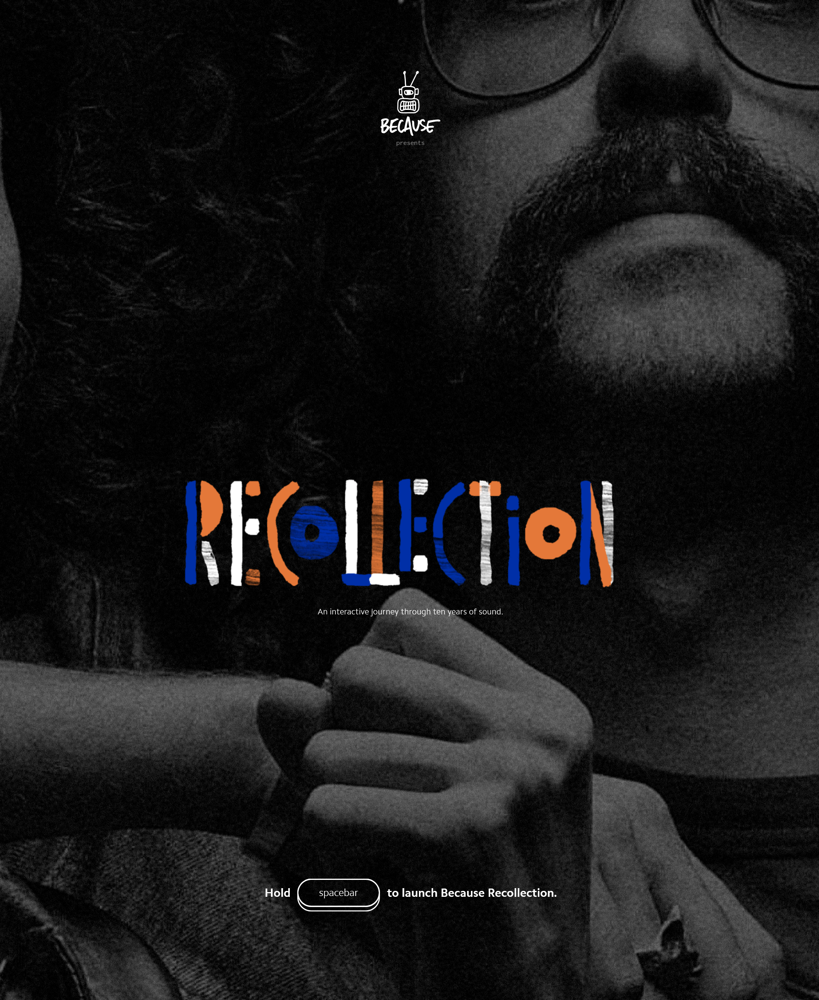

David Trinh | s4089410
Prompt:
Design a way for young children with minimal language skills to explore music.
Context:
Browser based musical instruments offer users the ability to dynamically perform music and explore complex audio design. While these interactions allow for a depth of control, they can be intimidating for many adult users, let alone young children whose language skills are still developing.
Discussion:
Accessibility
When thinking about this scenario, I don't necessarily see complexity as the main problem. Young children can interact with surprisngly complicated toys without needing to understand everything happening behind them. The difficulty with many digital instruments is instead that their complexity is communicated through things a child may not yet understand - controls such as sliders, keyboards, symbols, and notes.
Design Values
The word "explore" in the prompt is particularly important to me. Rather than teaching a child how to correctly perform music, I want the instrument to encourage them to experiment and gradually understand it through cause and effect. Young children already interact with objects in this way - they poke, grab, drag, shake and repeatedly hit things to see what happens. The response of the object becomes its own explanation. I want to apply this same thinking to music. Instead of explaining what pitch or rhythm is, these musical ideas could be experienced physically. Moving something upwards might make its sound higher, repeatedly bouncing something could create a rhythm, while bringing two objects together could layer their sounds. A child doesn't need to know the word "pitch" to recognise that their movement changed a sound.
Information Design
I want to apply this same thinking to music. Instead of explaining what pitch or rhythm is, these musical ideas could be experienced physically. Moving something upwards might make its sound higher, repeatedly bouncing something could create a rhythm, while bringing two objects together could layer their sounds.
Synopsis
Monster Orchestra is a browser based musical toy in which a collection of animated monsters function as the vessel of musical instruments.Rather than presenting the child with a keyboard, labelled buttons or sliders, I want the interaction to feel closer to playing with characters in a toy or simple game.
Each monster would have its own personality, movement and sound, with its physical behaviour relating in some way to how its sound behaves. A large, round monster might produce percussion when its body is tapped, while another could be stretched or moved around to change the sound it produces. The simplest interaction would still be pressing a monster and immediately hearing something, similar to the simplicity I like about iButtons, but there would be other behaviours that aren't necessarily explained upfront.
Response to Purpose and Worth
Accessibility
Conventional digital instruments often times tie in complex symbolic and linguistic information. Instead of asking a child to interpret the musical notation, instrument anatomy, labelled controls and more - the instrument communicates primarily through the character, sound and immediate feedback.
Feedback
The initial interaction should be deliberately simple, granted its intended audience. Touching a monster produces an obvious response, however, establishing a relationship between the child's actions, decision-making, as well as experimenting and adopting unique sound patterns and melodies. Exploration of music goes beyond simple monster clicking interaction, it is the opportunity and freedom to orchestrate unique sound patterns through experimentation. Holding, dragging or repeatedly interacting with the same monster may reveal different musical behaviours. This allows complexity to be progressively discovered rather than being the immediate presentation.
Design Values
The characterisation of the monsters also strengthen the projects playfulness and approachbility. The aim is to subtract the abstract musical controls, with more foundational and comprehensive technological tools and interfaces, whilst still maintaining the same experience and outcome of having understood musical patterns and auditory behaviour. More importantly than that, Monster Orchestra avoids conventional ideas of musical failures or structured melodic systems. The sounds and notes avaliable to the user could be constrained so that different monsters remain potentially musically compatible. The child would therefore be encouraged to experiment freely rather adhering to certain parameters and rules, rather than being rewarded for correct composition.
Framing
Design Inspiration
A major influence on the project is the way character-based games can disguise otherwise abstract interactions through personality and play. My Singing Monsters is particularly interesting and the first resonating concept, as each monster was assigned unique musical identitess, with multiple characters contributing towards a larger composition - identical to the structure of an musical orchestra. My [project aim is to investigate and explore a similar relationship between character and sound, but more than that - being able to invite users to experiment and break the barriers of conventional and structural musical learning/testing.
Another noticable mention and influence is Toca Band. The simplicity and it's effectiveness in musical experimentation is communicated through character -it was one of the earliest experiencs of muscial experimentation that I had experienced being rather straightforward whilst being capable of delivering unique and complex audiovisual response.
Interaction design analysis
Honeyalla

What draws me to Honeyella is the contradiction at the centre of its design: the experience feels open and unpredictable, yet the system underneath it is carefully controlled. The user constructs a beehive by arranging different cells around a Queen, with the Queen sending pulses through the structure that are transformed into rhythms and sounds. There is clearly a complicated musical system operating underneath, but I don't necessarily need to understand that system technically to begin creating with it. Instead, I understand it by changing the hive and listening to what happens.
The idea of having "no wrong configurations" is especially important here. Honeyella doesn't achieve this by giving the user complete freedom to produce absolutely anything. Its randomisation and musical parameters appear to establish boundaries that keep different combinations musically useful. I find that distinction interesting: freedom doesn't necessarily mean having no rules; the rules can exist invisibly so that the user feels free.
This gives me a different way of thinking about Monster Orchestra. Rather than simplifying the instrument by removing musical complexity, I could move some of that complexity behind the interface. Monsters could operate within compatible scales, rhythms or harmonic relationships without a child ever being shown those restrictions. If they repeatedly hit one monster, drag another around and activate several others at once, the system could still produce something coherent. I don't want Monster Orchestra to correct experimentation; I want its underlying design to make experimentation difficult to fail.
Picnuki

Picnuki feels almost immediately understandable despite explaining very little. Its pixel characters and draggable objects don't resemble the controls I would normally associate with a digital instrument, yet it doesn't take long to begin figuring out what they do. I can place something onto a character, watch it change, hear the result, and then try something else. The interface therefore creates a small cycle of action, reaction and recognition. I learn what something means after interacting with it rather than needing to understand it beforehand.
That is particularly relevant when designing for children with minimal language skills. Instructions aren't necessarily inaccessible because they're complicated, sometimes the problem is simply that they require language in the first place. Picnuki suggests that feedback itself can carry information. If an action produces a sufficiently immediate visual and sonic response, the interface can gradually teach its own behaviour.
Where Picnuki becomes most useful to my project, however, is actually where I want to depart from it. Its characters produce the experience, but the user still manipulates them through separate objects and icons. Monster Orchestra could collapse those two layers together. The character could also be the interface. Instead of dragging an icon onto a monster to modify its sound, perhaps I stretch the monster itself. I could tap its stomach for percussion, move it vertically to alter pitch, hold it to sustain a sound, or shake it to produce a more erratic rhythm. This would make musical exploration feel less like operating controls and more like discovering what a strange creature is capable of.
Synth Town

I chose Synth Town for a slightly different reason. Visually and in terms of its intended audience. it isn't necessarily similar to Monster Orchestra. What interests me instead is the way it takes concepts associated with electronic music and represents them through somethingf completely different: a city. Buildings functions as oscillators, road, represent rhythms and vehicles travelling through those roads act as playheads. Even visual characteristics of the buildings can relate back to the properties of the sound being produced.
I find this particularly interesting because many of these musical concpets are fairly abstract when presented through a conventional synthesiser. Something like an oscillator or waveform makes more sense once you understand what it represents, but there is nothing naturally understandable about that jargon or terms to someone encountering them for the first time. The interesting thing with Synth Town is that it doesn't actually remove those terms and complexity, instead it gives that complexity a visual and space as a metaphor for users to be able to interact with, super cool!
This has made me think more about what the monsters in Monster Orchestra should really represent. Initially, I had planned on having them as just characters that make different sounds, but I believe Synth Town helped me discover that their appearance and behaviours coud communicate something about hoiw those sounds work. A large, heavy monster for example could produce deeper percussion, while a smaller and more energetic monster could produce higher frequencies and pitch.
What I want to take from Synth Town is therefore not necessarily its city-building interaction, but the relationship it establishes between what something looks like, how it behaves and what it truly means musically. For Monster Orchestra, this could allow interaction information to exist without needing to be represented through text, numbers or conventional synthesiser controls.
Because Collection

Because Recollection stood out to me because it made me realise how accustomed I am to websites telling me what to do. Usually there is a clear button, menu, cursor change or piece of text directing me towards the next action. This site feels much less concerned with that certainty. I found myself clicking, dragging and moving around simply to see whether the website would respond. Instead of immediately understanding the interface and then using it, I had to understand it by using it.
I actually like the slight confusion this creates. There isn't the feeling that I have pressed the wrong thing or failed to understand the website; an unexpected action often just produces another part of the experience. It makes interacting feel less like navigating towards a destination and more like poking at something unfamiliar until its behaviour starts to make sense.
This shifts how I think about Monster Orchestra. Because the audience is young children, perhaps I shouldn't try to communicate every possible interaction upfront. A monster doesn't necessarily need a label saying that it can be dragged, stretched or repeatedly tapped. Discovering that accidentally could be part of the enjoyment. More importantly, the instrument should acknowledge almost anything the child tries to do rather than constantly separating their behaviour into correct and incorrect actions.